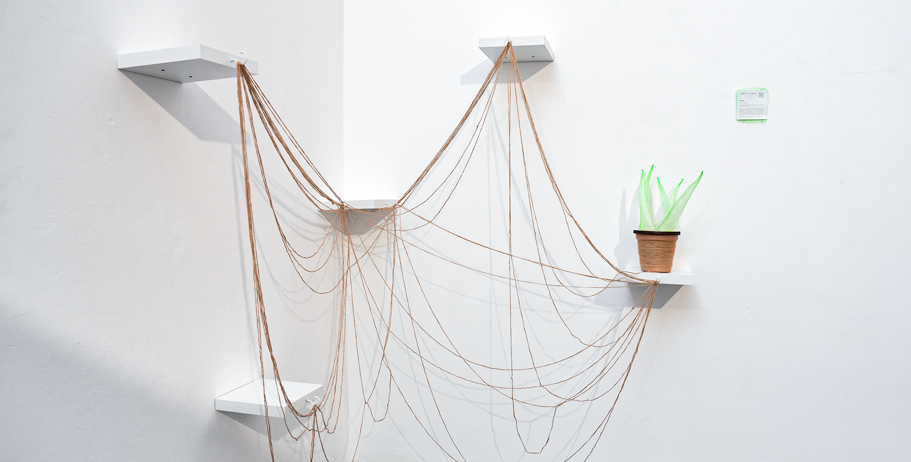
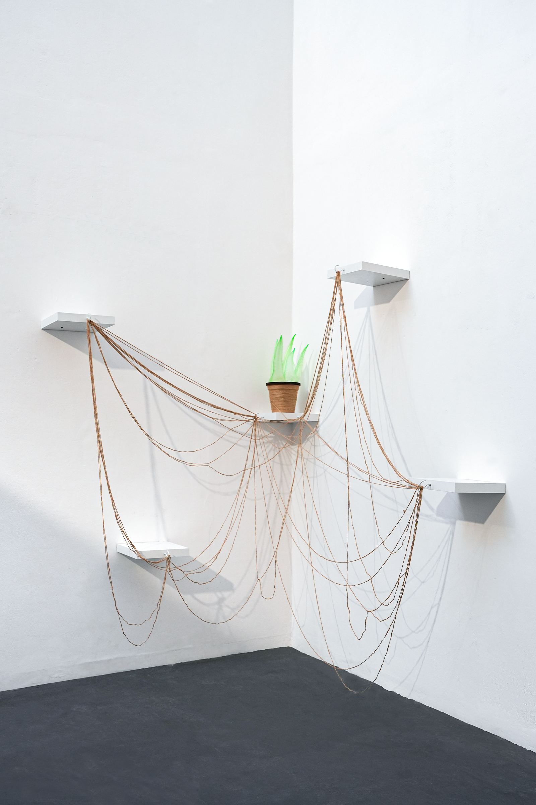
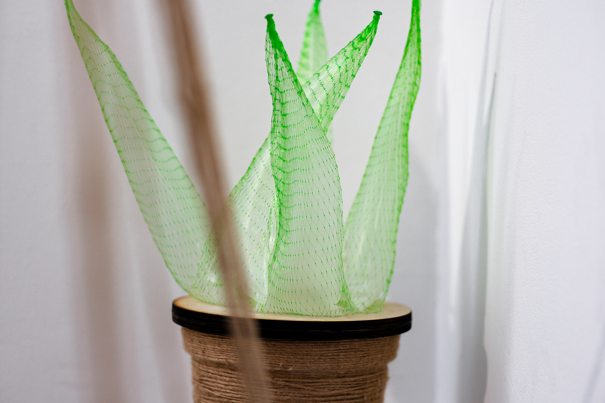
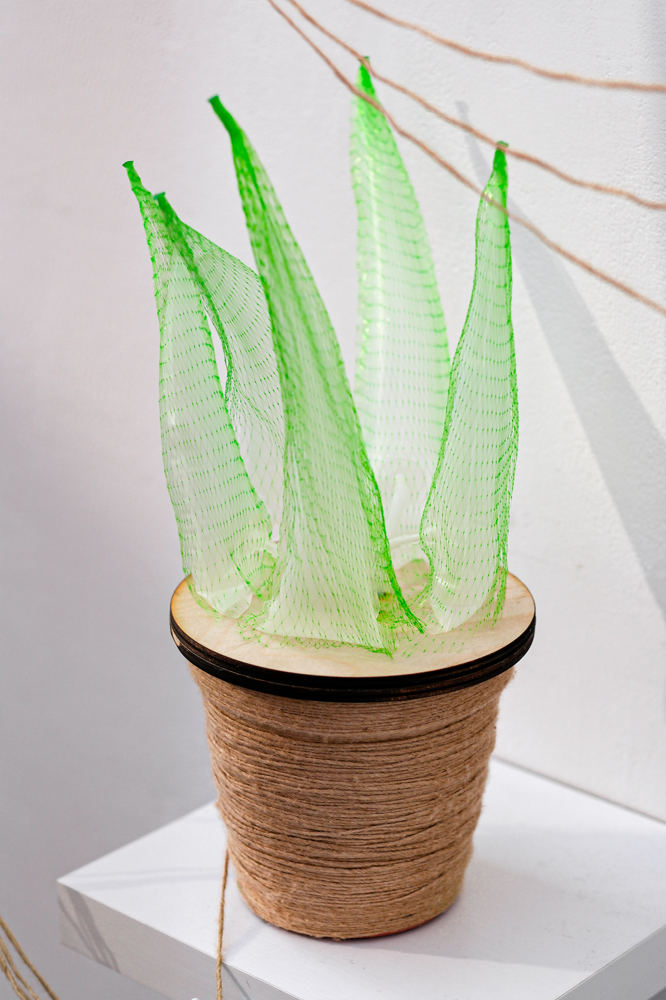
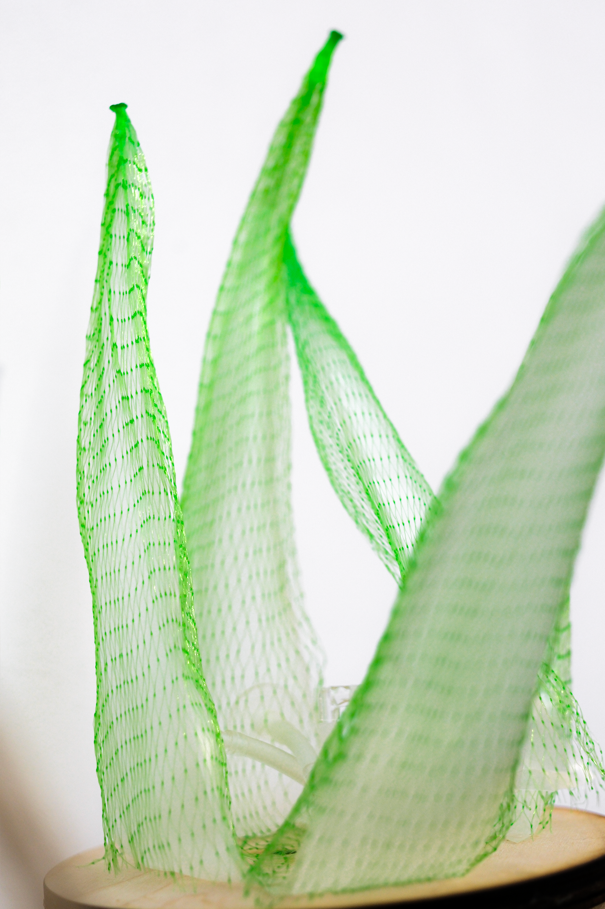
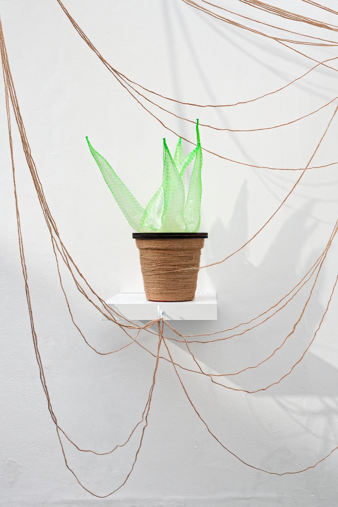

Alternative Aloe: Reroot
This interactive installation takes the aloe as a metaphor for my own life, shaped by repeated relocation.
As a visitor, you are invited to carry the aloe to different points within the space. When lifted, it deflates; when placed steadily on a new surface, it begins to recover. Its return is slow and gradual, as if it is taking time to settle into a new place. With each movement, you are invited to leave a trace of its “root” on an anchor by winding the thread from the pot around the hooks on each stand. Over time, these traces gather into a single, unrepeatable map: one aloe's migration, written by many hands.




